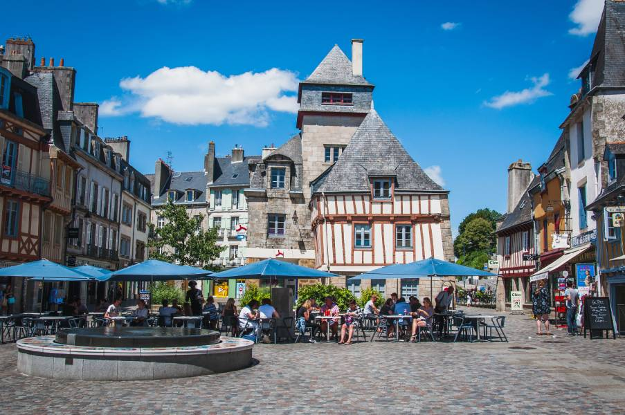
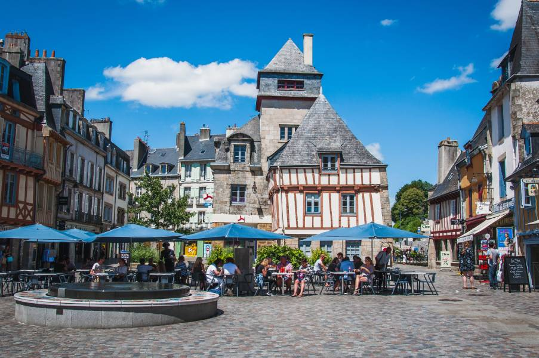
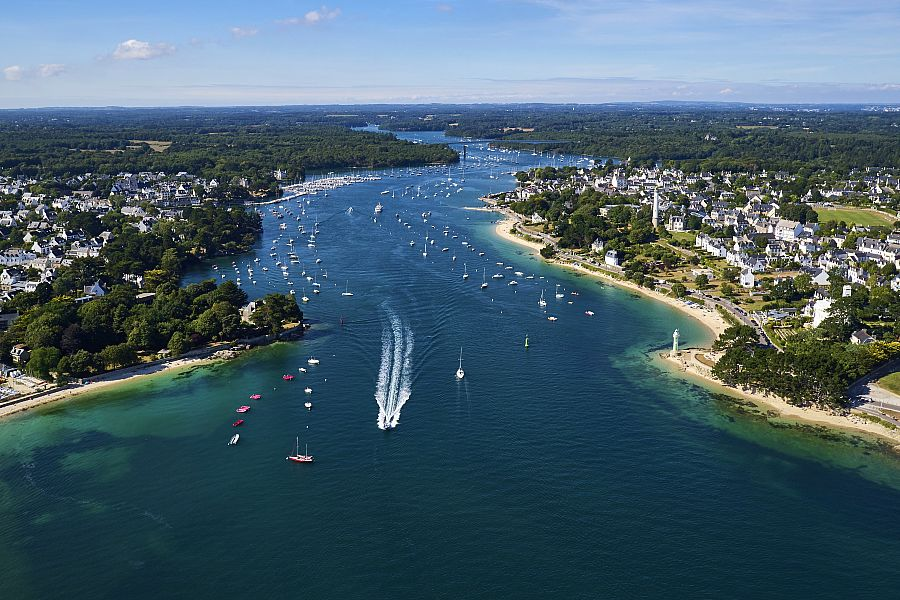
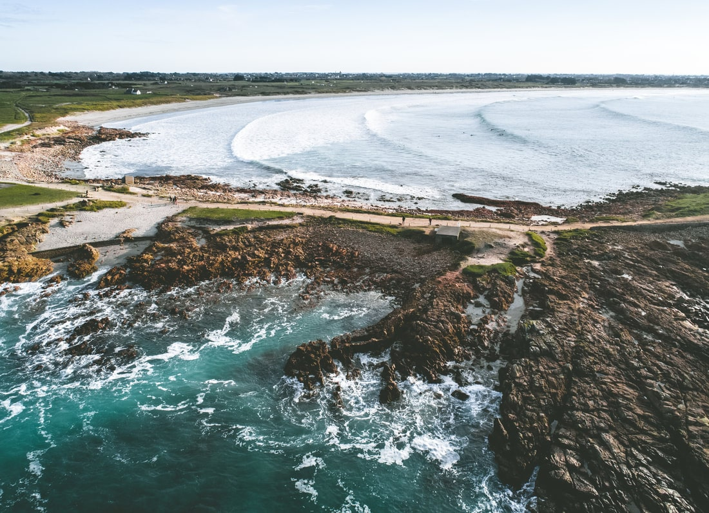
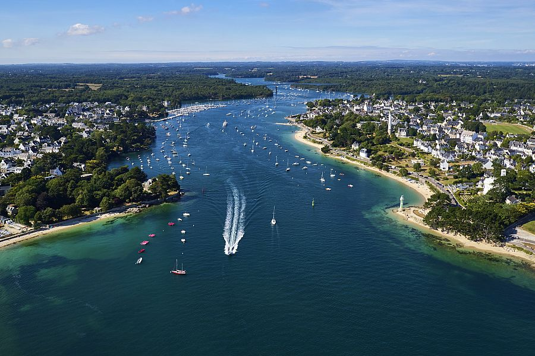
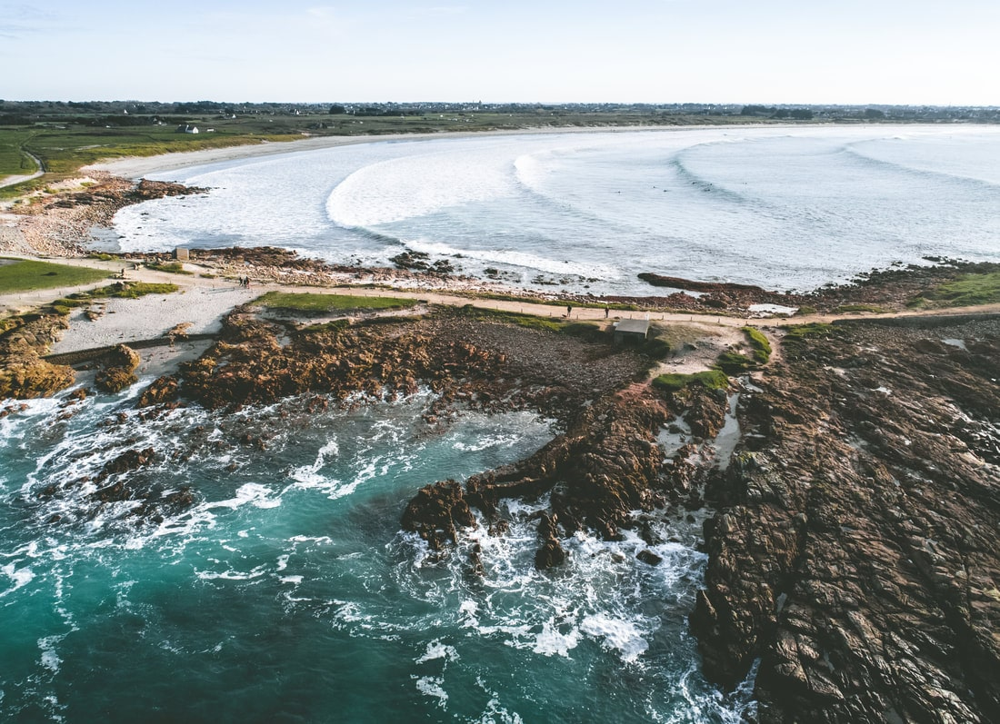
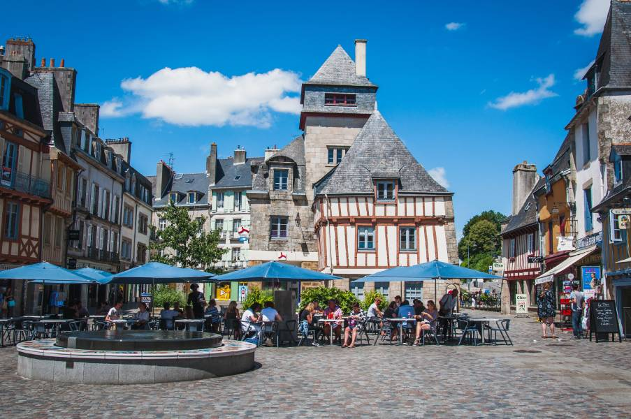
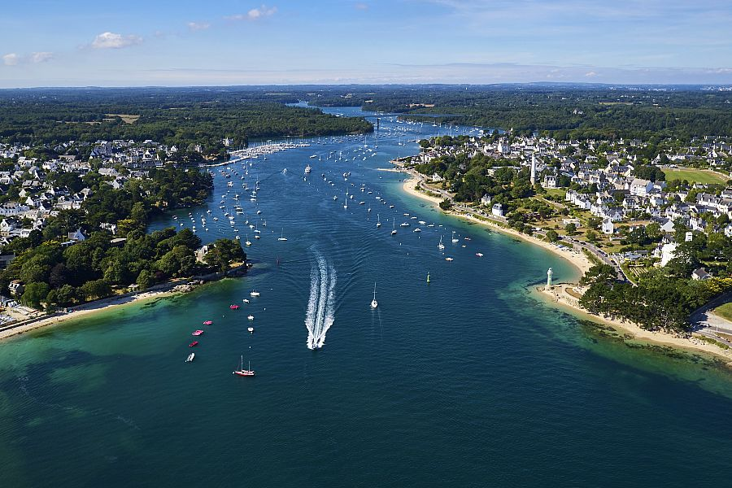
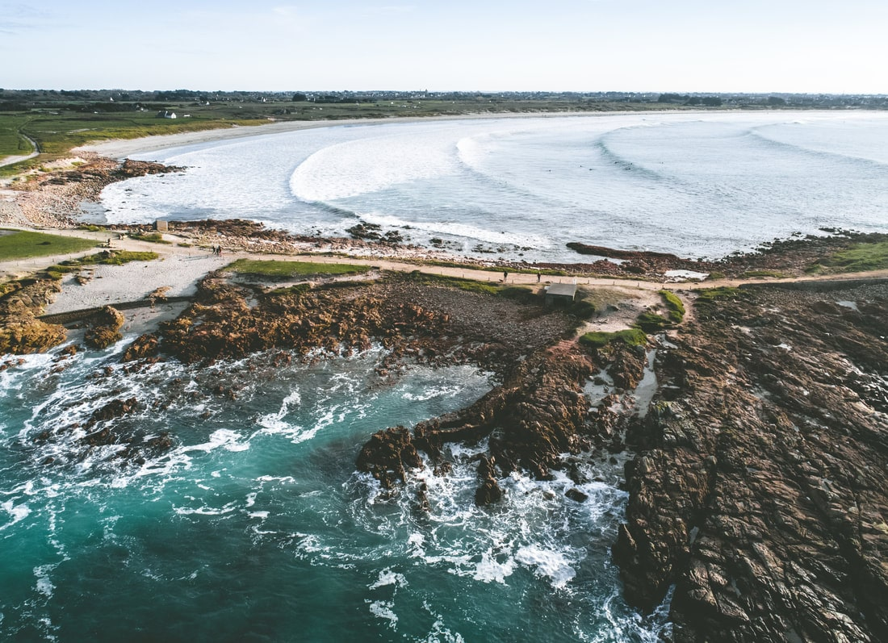

 



Penmarch est située dans le Finistère sud, à 34 km de la ville de Quimper.
Beaucoup d'endroits à découvrir aux alentours:
Plage De La Joie 1 km
Plage De Pors Carn 4 km
Le Guilvinnec 7 km
Pont L'abbé 14 km
Quimper 34 km
Pointe du Raz 47 km
Locronan 43 km
Bénodet 24 km
A proximité de la maison: Supermarché à 2km, Boulangerie à 300m, Crêperies et Restaurants à 400m.
Activités proches: Plage, Canoe Kayak, Surf, Kite Surf, Pêche, Voile, Randonnée sur Sentiers Cotiers et Sorties Bateaux.


